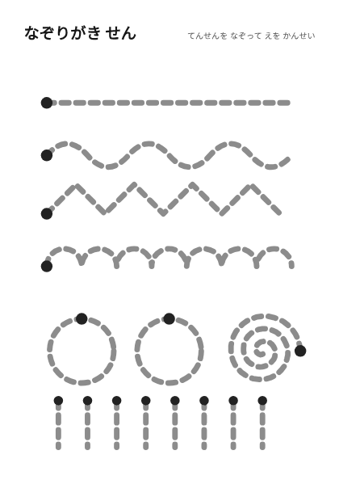
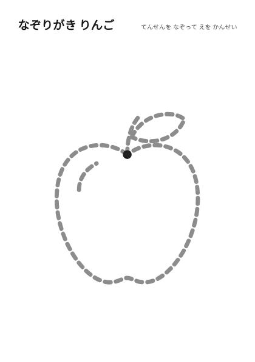
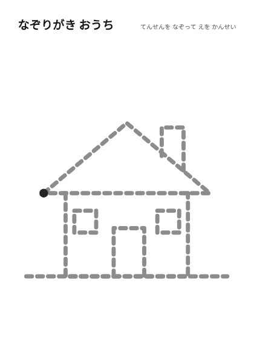
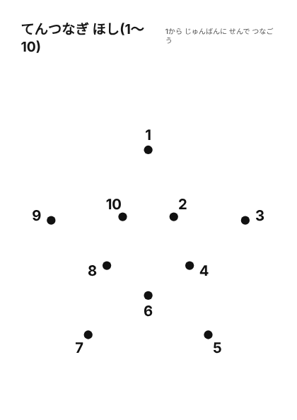
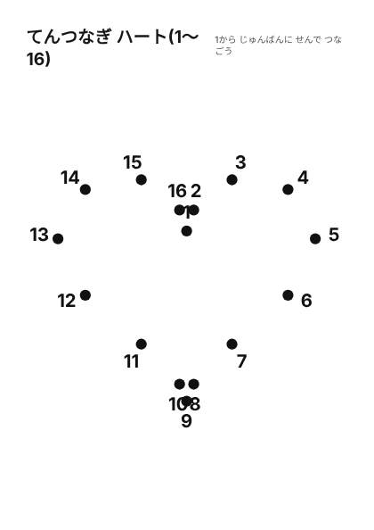

ホーム > なぞり・点つなぎ
なぞり・点つなぎ
線のなぞり書き、点線をなぞって絵を完成させるシート、数字の順に点をつなぐシートです。鉛筆やクレヨンを動かす練習にも使えます。

なぞりがき せん2歳向け・直線、波線、ぐるぐるなど
なぞりがき りんご点線をなぞって下絵を完成
なぞりがき おうち点線をなぞって下絵を完成 なぞりがき おひさま点線をなぞって下絵を完成
なぞりがき おひさま点線をなぞって下絵を完成 なぞりがき ねこ点線をなぞって下絵を完成
なぞりがき ねこ点線をなぞって下絵を完成
てんつなぎ ほし1〜10 てんつなぎ ロケット1〜11
てんつなぎ ロケット1〜11 てんつなぎ おうち1〜11
てんつなぎ おうち1〜11
てんつなぎ ハート1〜16
使い方
- 線のシートは、はじめは太いペンやクレヨンでなぞります。
- 点つなぎは、1から順番に数字を声に出しながら線を引きます。
- できあがった絵に色をぬっても楽しめます。